.jpg){kind=link}

.jpg){kind=link}


![– Wladyslaw [Disk.]](https://commons.wikimedia.org/wiki/File:Ottawa_-_ON_-_National_Gallery_of_Canada.jpg){kind=link}


Québec City
Fairmont Le Château Frontenac
A historic château hotel inside the walls of Old Québec in Québec City, with rooms and suites, several dining venues, and a spa on site.
Check roomsOfficial hotel website · opens in a new tab
North America / A place to get to know
Historic riverfronts, striking skylines and room to roam
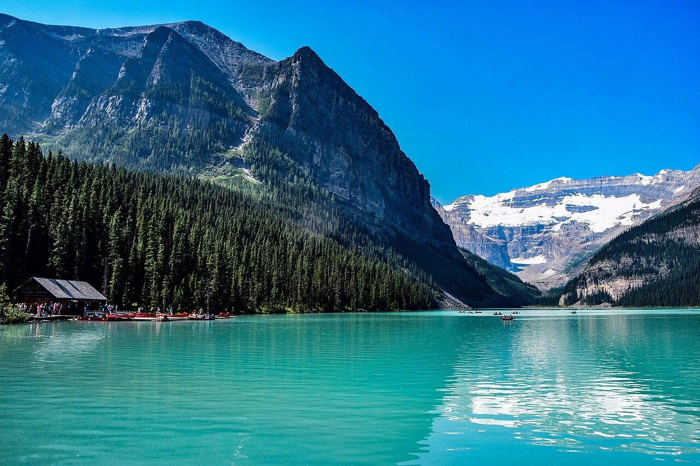
Welcome to Canada
Canada pairs historic riverfront cities with large protected landscapes. Québec City's stone streets, Toronto's skyline and Newfoundland's glacier-shaped coast show how much changes from one region to another.
Explore a little further
Landmarks, landscapes and the stories behind them. Select a photograph for a closer look.
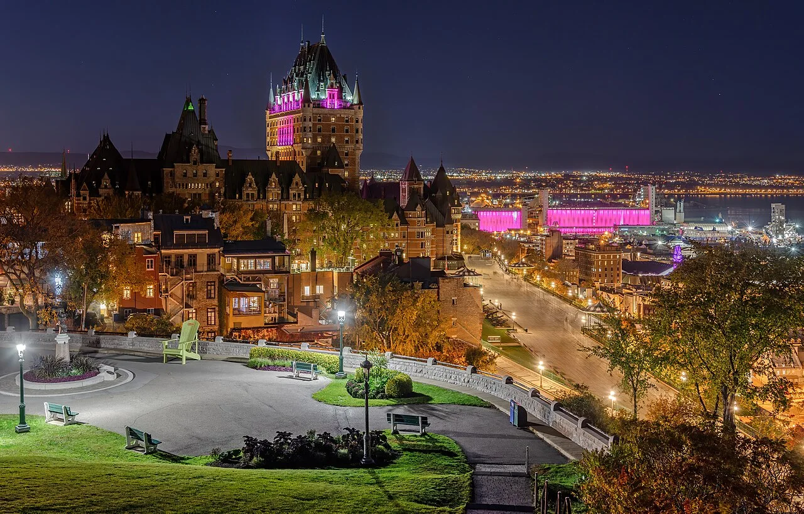
This grand hotel rises above Old Québec and the St. Lawrence River. Its steep roofs and towers make it a prominent landmark beside the Dufferin Terrace.
Wilfredor · CC0 . Resized as needed and converted to WebP. No crop.
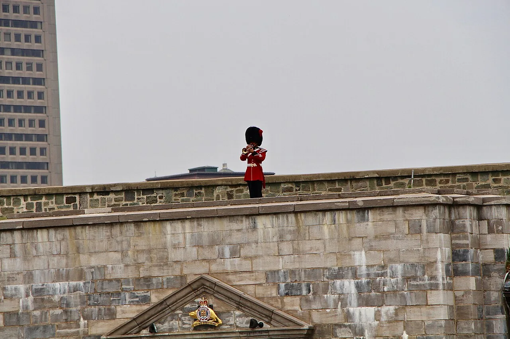
This historic fortress remains an active military base within Québec City's fortifications. Guided visits introduce its defensive architecture and the history of the Royal 22e Régiment.
Thomas1313 · CC BY-SA 4.0 . Resized as needed and converted to WebP. No crop.
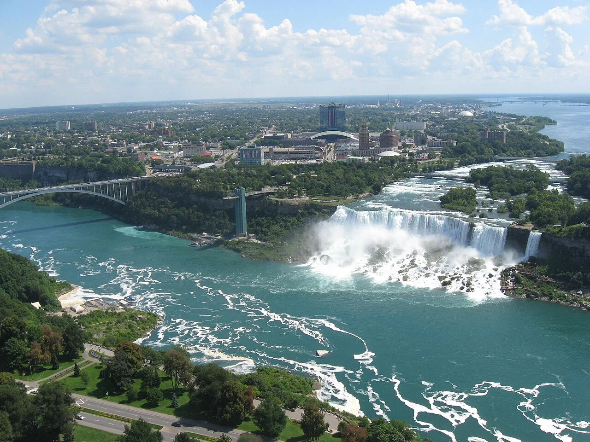
On the border between Ontario and New York, the Niagara River plunges over a group of powerful waterfalls. Canada's curving Horseshoe Falls dominates many of the best-known views.
Nandaro · CC BY-SA 3.0 . Resized as needed and converted to WebP. No crop.
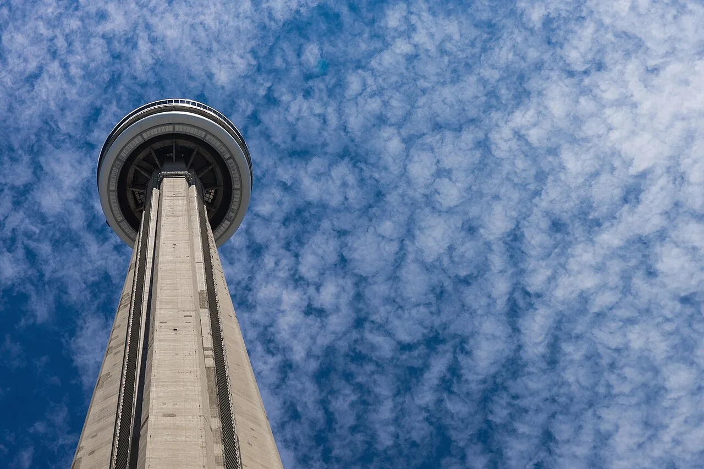
Toronto's communications and observation tower rises 553.33 meters above the city. Its elevated viewing areas look across the downtown skyline, Lake Ontario and the surrounding region.
Scott Webb scottwebb · CC0 . Resized as needed and converted to WebP. No crop.
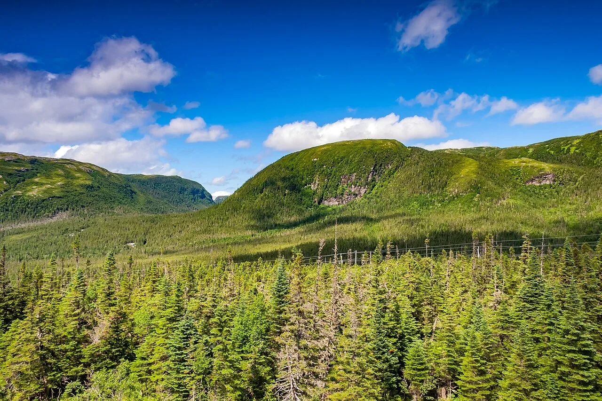
Western Newfoundland's park combines fjords, coastal headlands and exposed ancient rock. The Tablelands reveal material from Earth's mantle, making the landscape especially significant for understanding plate tectonics.
Michel Rathwell from Cornwall, Canada · CC BY 2.0 . Resized as needed and converted to WebP. No crop.
Explore a little further
Québec's Winter Carnival celebrates the cold season with outdoor festivities, while Calgary's Stampede draws on western ranching traditions. Ottawa's National Gallery of Canada holds Canadian and international art.
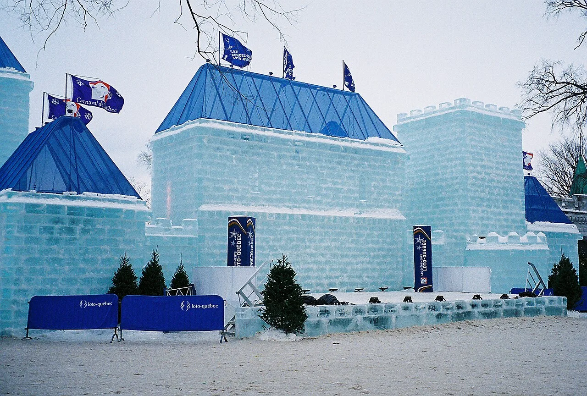
Quebec Winter Carnival
Shapiros10 · CC BY-SA 3.0 . Resized as needed and converted to WebP. No crop.
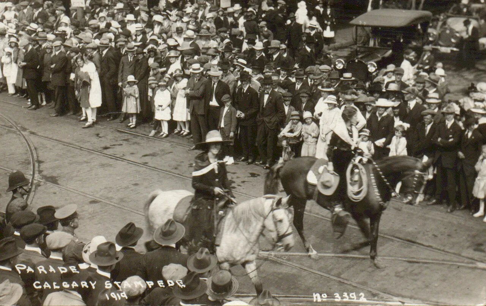
Calgary Stampede
Unknown author Unknown author · Public domain . Resized as needed and converted to WebP. No crop.
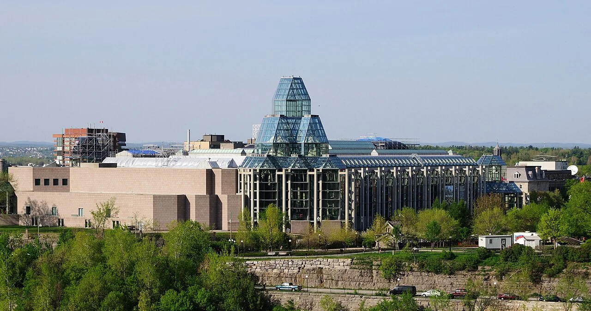
National Gallery of Canada
– Wladyslaw [Disk.] · CC BY-SA 3.0 . Resized as needed and converted to WebP. No crop.
Explore a little further
Canada's regional comfort foods include Québec's poutine and meat pies, Ontario's butter tarts and British Columbia's layered Nanaimo bars.
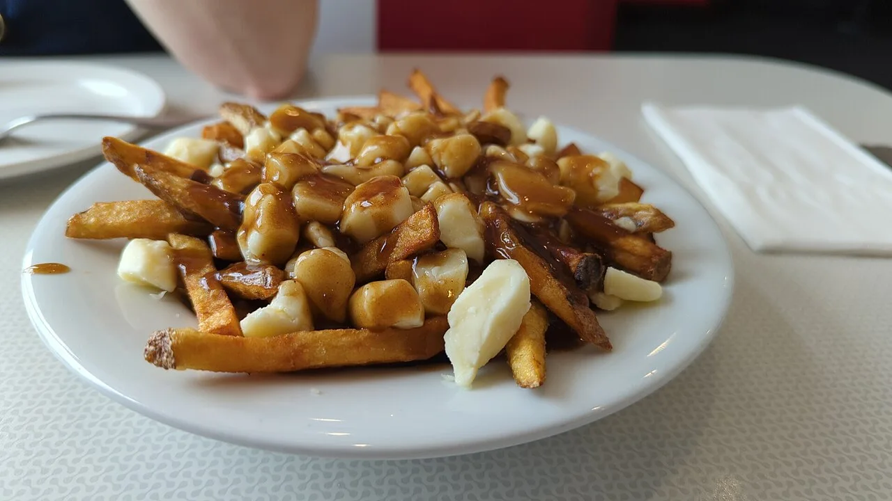
Québec's well-known comfort food combines hot fries, cheese curds and gravy.
Antonydstevens · CC0 . Resized as needed and converted to WebP. No crop.
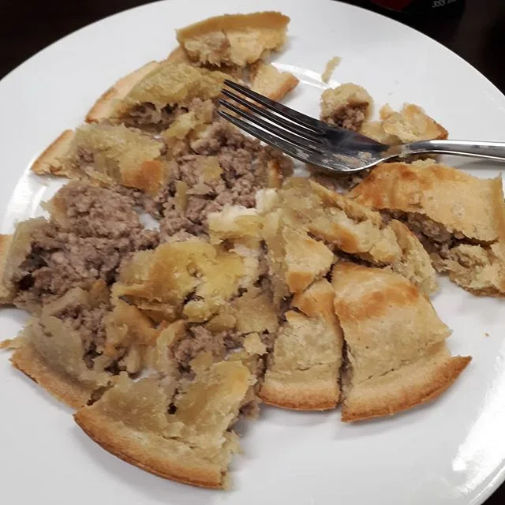
This Québécois savory meat pie has regional variations, including versions with minced meat and deeper pies with meat and potatoes.
Oaktree b · CC BY-SA 4.0 . Resized as needed and converted to WebP. No crop.
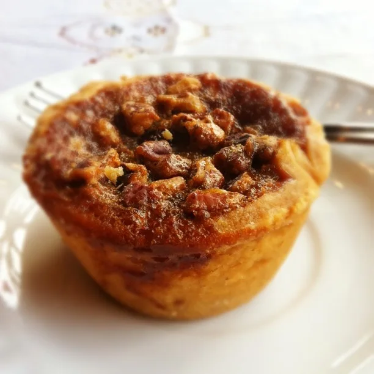
These small pastry shells hold a rich filling made with butter, sugar and eggs, with raisins or nuts included in some versions.
Hisakazu Watanabe · CC BY-SA 2.0 . Resized as needed and converted to WebP. No crop.
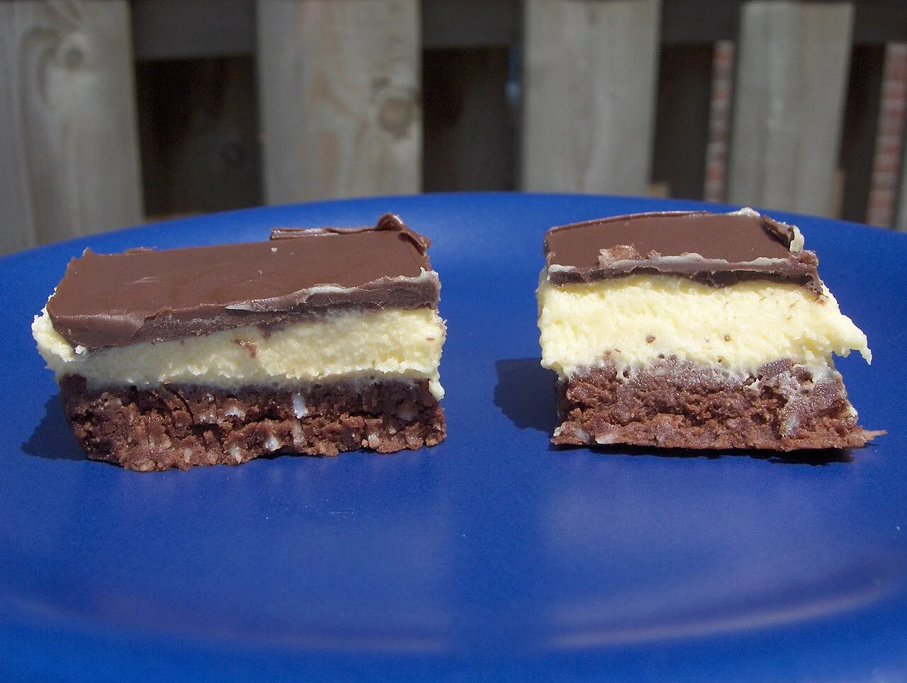
Named for the British Columbia city, this layered square combines a cocoa-crumb base, custard-flavored filling and chocolate topping.
Stephanie Spencer · CC BY 2.5 . Resized as needed and converted to WebP. No crop.
Explore a little further
Explore Québec City's riverfront and shopping lanes, or skate on Ottawa's Rideau Canal when the official ice surface opens.
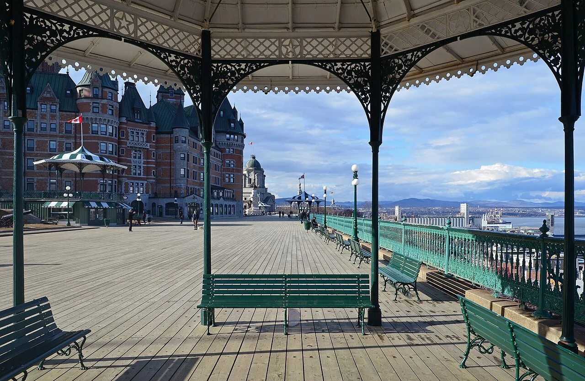
Stroll the broad boardwalk below Château Frontenac for views of the St. Lawrence River, passing historic structures and the upper entrance to the funicular.
Selbymay · CC BY-SA 3.0 . Resized as needed and converted to WebP. No crop.
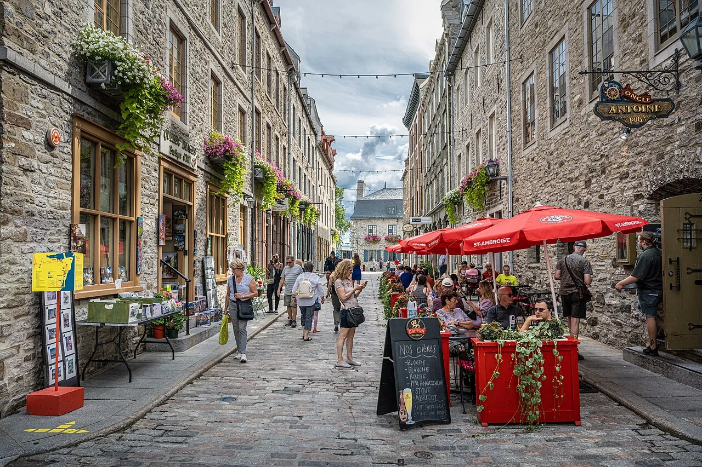
Explore the lower town's narrow shopping streets, stone buildings and small boutiques around Rue du Petit-Champlain and nearby Place Royale.
Wilfredor · CC0 . Resized as needed and converted to WebP. No crop.
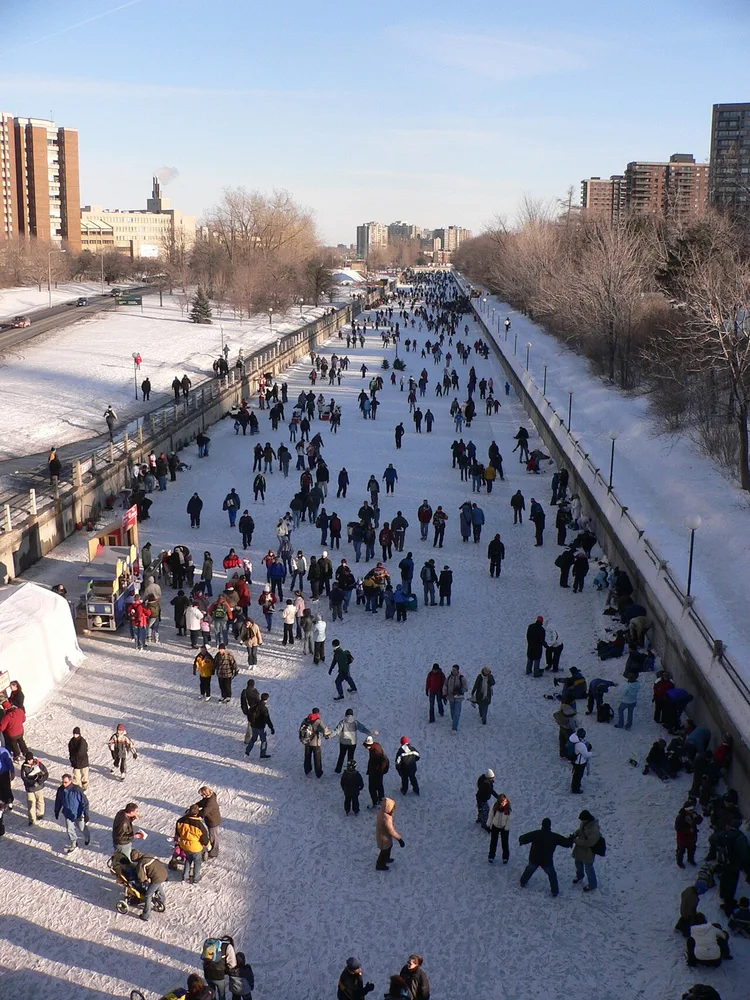
Skate through central Ottawa when the National Capital Commission opens the natural ice; operating dates and available sections depend on winter weather.
Caroline en voyage · CC BY-SA 3.0 . Resized as needed and converted to WebP. No crop.
Explore a little further
Old Montréal offers illuminated historic streets and restaurants, while Vancouver's Granville Street is known for music venues and evening entertainment.
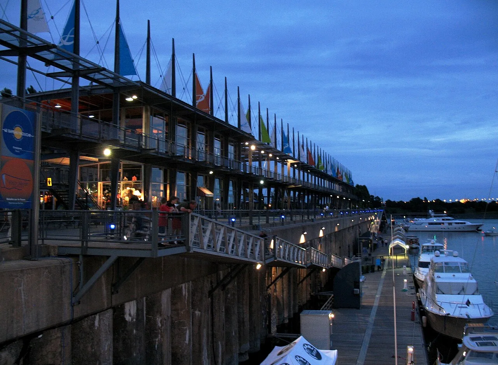
Old Montreal at night
No machine-readable author provided. Underneath-it-All assumed (based on copyright claims). · Public domain . Resized as needed and converted to WebP. No crop.
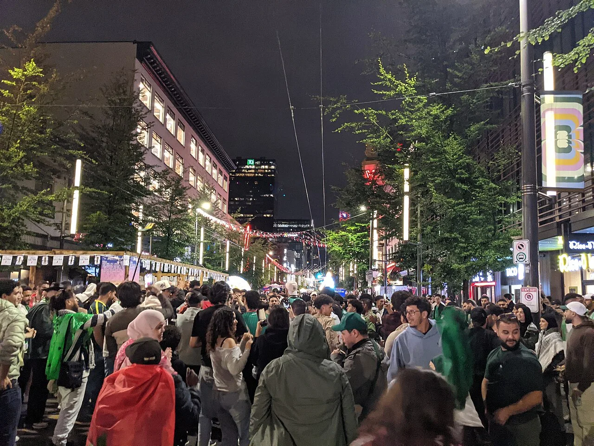
Granville Street at night
Northwest · CC BY 4.0 . Resized as needed and converted to WebP. No crop.
Explore a little further
A country overview with selected attraction markers. Use local transport information to plan the route between regions.
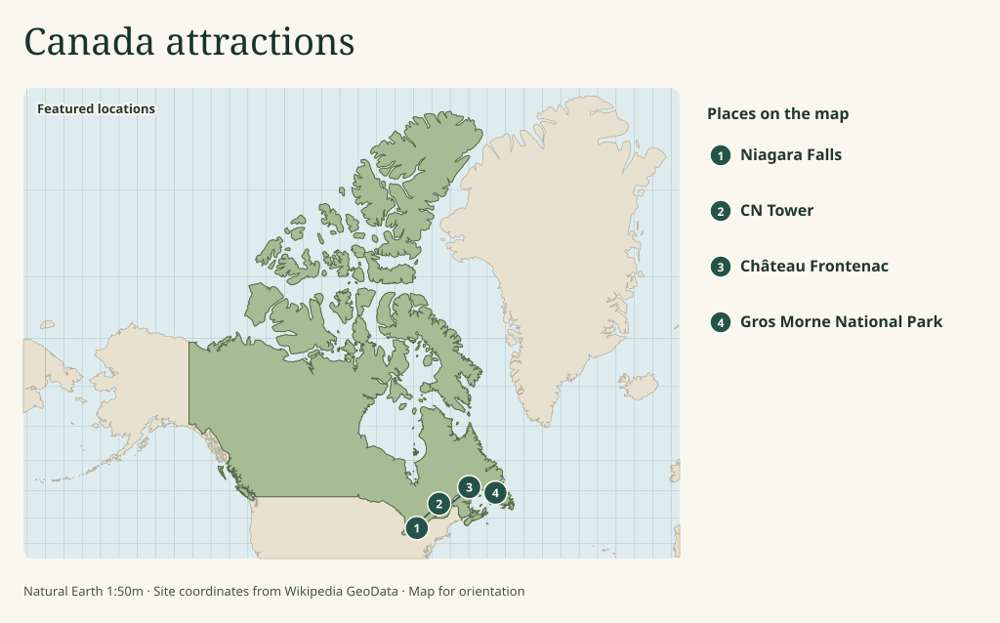
Illustrative overview. Marker locations and map sources are documented below.
A place to settle in
Two places to consider for your trip. Check room choices, current prices and availability directly with each hotel.
Québec City
A historic château hotel inside the walls of Old Québec in Québec City, with rooms and suites, several dining venues, and a spa on site.
Check roomsOfficial hotel website · opens in a new tab
Québec City
A historic hotel in Old Québec, Québec City, welcoming guests since 1870 and offering rooms within the fortified district near the city’s principal heritage attractions.
Check roomsOfficial hotel website · opens in a new tab
The hotel sets its prices, booking terms and payment currency. Some properties confirm reservations after an enquiry.
Know your money
Get familiar with the local currency and estimate what an amount in your own currency is worth.
Daily reference Rates By Exchange Rate API . The rate date appears with your estimate.
Morning to evening · Canada
Thomas1313 · CC BY-SA 4.0 . Resized as needed and converted to WebP. No crop.
Selbymay · CC BY-SA 3.0 . Resized as needed and converted to WebP. No crop.
Suggested order and approximate times, with breaks for meals and travel. Confirm access, reservations, transport and operating hours locally. Evening photographs do not guarantee an event or performance.
Confirm arrangements with the official visitor resource .
Visitor resource: https://travel.destinationcanada.com/en-us
Guide: Atlas & Away · Canada · researched 18 November 2026.
Explore a little further
A starter in Québec French. The pronunciation hints are approximate; listen to local speakers and ask politely when unsure.
| Phrase | Meaning | Say it approximately |
|---|---|---|
| Bonjour | Hello | — |
| Merci | Thank you | — |
| Je ne parle pas français | I don’t speak French | — |
| Combien ? | How much? | — |
| Parlez-vous anglais ? | Do you speak English? | — |
A little preparation
0 of 4 preparations complete
Saved places and checklists use this browser’s local storage. They are not an account or a booking.
Before you go
The example itinerary stays around Québec City. The full country guide covers several regions; allow extra days and transport for places beyond that route.
Use the Hotels section to open a property’s official website and check rooms, prices and booking terms. You complete any reservation and payment with the hotel.
Open the enquiry page or email profannan712@gmail.com .
Guide researched on 18 November 2026. Text and code were developed with ChatGPT/Codex assistance for this student learning project.
Phrase reference: Québec French phrasebook .
Natural Earth (base data), ChatGPT in Codex (map design) · Public-domain Natural Earth base data . Projected Natural Earth boundaries, added labels and site markers, and exported SVG.